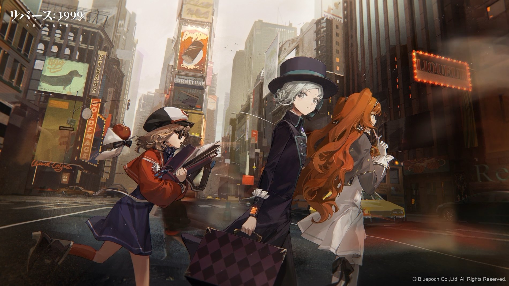

档案 · 一九九九年秋
暮色 档案
Dusk Archive
把每天值得留下的片刻剪下来，贴进这本册子里。写给自己，也写给路过的人。

0篇存稿
0条回声
0起点年份
新
往册子里贴一张
No.0413
0
ARCHIVE / 归档
全部纸张按时间摊开
六张纸，六段被留下来的光。点开任意一张，回到那天的句子里。
继续往前翻，册子还有空页
这本册子的来历
初二那年我在旧书摊买到一本硬壳剪贴簿，店主说原本是别人的，后来没人来取。我用了三块钱带走它，一直空着，直到去年才贴进第一张纸。
我试过很多种记录方式。朋友圈太吵，备忘录太散，最后发现纸和胶水最让人安心：贴错了可以撕下来，撕坏了就留着那道口子。
这个站就是那本册子的电子版。左边是今天，右边是我。你可以在任何一条下面说话，我会看，只是回得慢。
1999
册子上印的年份，和我的出生年无关，只是觉得好看。
2025
贴进第一张纸，是一张下雨的车站照片。
今天
共 6 篇，26 条回声。慢慢加。